DISCLAIMER
The information contained herein is to be used for educational purposes only.
The author is not a medical professional, and this information should not be
considered medical advice. This information should NOT be used to replace consultation with or treatment by a trained medical professional. The listing of a medication herein does not imply endorsement by the author.
SECTIONS
Will I be able to grow a beard or mustache?
Will shaving my face make my beard grow in thicker or faster?
Will facial hair dye make my facial hair appear thicker/denser?
Will minoxidil (i.e., Rogaine) enhance my facial hair growth?
What about using things like fake facial hair, makeup, or theatrical techniques?
Styling facial hair: sideburns, mustaches, and beards
Introduction
This section summarizes basic facts and myths about facial hair growth, describes and shows different styles of beards, mustaches, and sideburns, and considers how facial hair styles might best augment certain facial features to enhance a masculine look. Pointers on growing, maintenance, and care of facial hair are also provided.
Will I be able to grow a beard or mustache?
The answer to this question appears to depend mainly on your genetic makeup (i.e., the tendencies for growing facial hair that you were born with) and how long you have been on testosterone therapy. This mirrors the process that non-trans men go through when growing facial hair-- it depends on their individual tendencies for growing facial hair, as well as the length of time that has passed since they began growing facial hair during puberty.
Regarding the genetic component, there is considerable variance in both the developmental pace and the quantity that different men are able to grow facial hair. Some men grow thick facial hair in a relatively short period of time after reaching puberty or starting testosterone therapy, while others may never be able to grow a full beard or mustache in their lifetime. Some men grow substantial facial hair only in certain areas (such as the sideburns or chin), but are unable to ever grow a full mustache or grow more than a few hairs on their cheeks. Some may notice patchy or bald areas in an otherwise full beard, or sideburns that never grow in fully. These varying developmental patterns seem to be largely related to inherited traits-- though keep in mind that a guy may not be able to accurately predict his own facial hair growth based on that of his male relatives. Just because a man's dad or brother grows a thick beard or mustache doesn't necessarily mean that his own facial hair growth will be the same.
Regarding the length of time on testosterone therapy, there will be some variance depending on the individual, but generally facial hair tends to thicken and develop over a period of years rather than over just a few months. This is similar to any man who has gone though puberty--typically, some facial hair begins to develop in the early months of puberty, but it often takes a number of years to begin to grow facial hair in a pattern substantial enough to grow a full beard or a full mustache. Some men begin with only sparse facial hair in their teens and early twenties, but find that their beards have thickened and filled out by their late twenties or early thirties. There are individuals who grow facial hair quickly and densely, but most guys develop over time. For those who have been on testosterone for only a short time, patience is key when trying to grow a beard-- it may take several years.
Will shaving my face make my beard grow in thicker or faster?
No, shaving will not make your facial hair grow in any thicker or faster, though it may feel that way.
There are a couple of reasons why your hair might feel like it is growing in thicker after shaving. First, hair tends to be thicker and darker near the root and becomes thinner/wispier near the end of the hair as it grows out. When you shave a hair, you are cutting it close to the thicker root end, creating a much shorter hair with a sharper edge close to the skin's surface. This leaves a stiffer "stubble" effect when you rub your face in the day or two following your shave. Once the hair grows out, it will begin to feel softer again.
There are a lot of people who swear that shaving their hair causes it to grow in thicker, darker, and faster. However, if this were true, wouldn't every man, woman, or boy who shaved his or her face be able to grow a full beard? Many men shave each day precisely because their facial hair is patchy and they cannot grow a full beard! If the myth about shaving causing beard growth were true, all people who shave their faces regularly would soon develop full beards, and that is simply not the case.
Will facial hair dye make my facial hair appear thicker/denser?
Using facial hair dye to try to make your facial hair look thicker/denser might work if you already have some substantial growth, but if your facial hair is still very thin and wispy, coloring it probably won't be very effective. You can certainly color thin, wispy hairs, but in general this will not produce the look of an adult beard or mustache. It may create a shadowy look on your upper lip or cheeks, like a teenage boy who has just started to grow facial hair. If the hair is very fine, the color won't take well and will be barely visible.
If you have started to grow numerous thick whiskers, but some of them are coming in blonde, then using a facial hair dye might help help make your hair appear more dense. If you choose to dye your facial hair, use a product that has been designed specifically for use on the face (such as "Just for Men" for mustache, beard, and sideburns or a similar product), and follow all directions on the package to avoid allergic reactions or rashes. Also, choose a color that is similar to the facial hair you already have, or to the hair color on your head.
In general, dyeing your facial hair is only worthwhile if it will enhance the substantial growth you already have; it might end up looking worse or unnatural if your hair is too fine and too sparse. If you are unsure of how dye will look, grow your facial hair out for a while, and then do a test run, following the directions for the product you have chosen. If the results do not look good or realistic, simply shave off the hair.
Will minoxidil (i.e., Rogaine) enhance my facial hair growth?
While minoxidil has been approved for increasing hair growth on the top of the head, it has not yet been marketed or tested specifically for facial hair growth. However, there have been anecdotal reports regarding increased beard growth with application of minoxidil (see the minoxidil discussion on the Beard Board for details). When considering anecdotal reports about minoxidil use on facial hair, it should be noted that trans guys who are not on testosterone therapy would probably not show comparable results to post-pubescent non-trans men or trans men who have been taking testosterone for some time. It should also be noted that anecdotal reports are not the same as clinical medical evidence, and thus the reader should proceed with caution and speak to their doctor for specific medical advice.
The exact process by which minoxidil causes its results is not fully understood, but it has been shown to stimulate head and body hair growth in some people. Women who use minoxidil for scalp hair loss are cautioned to avoid application to the face in order to avoid unwanted facial hair growth; this would indicate that increased facial hair growth via topical minoxidil is indeed possible, though to what degree (i.e., how much hair growth, and the thickness and quality of the new hair) remains largely unstudied.
Minoxidil was first used in tablet form as the drug "Loniten," an antihypertensive, to treat high blood pressure. An unexpected side effect of Loniten was that some patients experienced excessive hair growth. As a result, a topical solution of minoxidil was developed for application directly on the scalp to stimulate hair growth. This product is marketed in the United States as "Rogaine," though it can also be obtained under other names and as a generic. It typically comes in 2% and 5% solution, usually as a lotion or foam. Topical minoxidil does not require a prescription; it can be purchased over the counter in many drugstores.
When used on the scalp, minoxidil requires twice-a-day application, and it may take from 3 to 6 months for the user to see an effect. Again, minoxidil is not approved for use on the face, so it is unclear if the dosing for the scalp is appropriate for use on the face. It stands to reason that results from minoxidil would probably take at least several months of continued application. Caution should be exercised when using any medication, and questions or concerns should be directed to your doctor or dermatologist.
Another word of caution for those considering minoxidil for facial hair growth: there have been anecdotal reports of additional hair growth in places other than where the drug was applied, such as the chest, back, abdomen, and unusual facial hair growth by some users (i.e., very high on the cheeks just under the eyes). Some of this growth can continue well after discontinuation of minoxidil. If these risks are a concern, you may not wish to use minoxidil.
Common side effects of minoxidil include skin irritation, itch, contact dermatitis, hives, swelling, and sensitivity. Rare side effects include blurred vision, chest pain, decreased libido, difficulty in maintaining an erection, fast or irregular heartbeat, flushing, headache, lightheadedness, numbness or tingling of the hands, feet, or face, or rapid weight gain.
What about using things like fake facial hair, makeup, or theatrical techniques?
Using fake facial hair or makeup to create a realistic-looking beard, mustache, and/or sideburns can be a very difficult and/or expensive project. While you may be able to create facial hair that looks good from a distance, it may be far less convincing up close, or when touched.
Using makeup to create the look of a five o'clock shadow or sideburns, or to enhance the thickness of existing facial hair, can be easily detected at close range. Makeup also can be worn off from sweat or oils, and can be smudged or rubbed off when touched.
Fake theatrical paste-on beards and mustaches can be found in costume shops, but are usually not very realistic. More expensive facial hair pieces that are made of real human hair (usually woven onto some type of fine lace backing that is to be glued to the face) can still be detected upon close inspection, and also don't tend to feel realistic.
Some theatrical makeup artists create more realistic looking facial hair by cutting fake hair (usually purchased in braid form) into individual whisker- or stubble-length pieces, and then attaching those loose pieces to the face with an adhesive called "spirit gum." For extra realness, sometimes more than one color of fake hair whiskers are mixed together. Using this process, it can take hours to create a convincing look, depending on the style you are applying. Additionaly, quality hair, adhesive, and adhesive remover can be quite expensive. While this method may create a better result than a one-piece paste-on, it still is not very realistic to the touch (the glue can be tacky even after drying), the hairs can easily fall off or be rubbed off, and it can be difficult to continue to re-create the same pattern day after day.
Finally, there are logistical issues to consider. If you suddenly appear one day with a full mustache or beard after having very little facial hair, people will wonder where it came from! Additionally, if you wish to be taken seriously as a guy, wearing obviously fake facial hair will probably have the opposite effect than what you are hoping for.
In general, while it may be fun to try out these techniques at home or for theatrical purposes, fake facial hair takes a lot of effort and tends not to look or feel realistic for everyday purposes. Give your hair some time to grow in by itself. Be patient, and if all else fails, remember that many guys simply don't tend to grow full beards.
Styling facial hair: sideburns, mustaches, and beards
The following sections provide examples of facial hair styles for the three main areas of the face: the sideburns (in front of the ears), the mustache (the upper lip), and the beard (cheeks, jawline, and neck). Basic hints are provided in each section for choosing a facial hair style to best suit certain facial features, such as a receding hairline, a soft chin, a round face, etc. When choosing a style, consider your facial hair patterns as well as your facial shape, facial features, and hair type-- not all styles will look good on all people. When in doubt about choosing a style, consult with your barber or hair stylist.
Sideburn styles
Sideburns are the area of facial hair that grow down the sides of the face, in front of the ears. They can be worn alone or can connect the hair of the scalp with the rest of the facial hair. (NOTE: Sideburns are not formed from scalp hair grown long and styled downward to cover the sides of your face. If your sideburns have not grown in yet, simply keep your sideburns short until you can grow them-- don't try to create a sideburn "look" with hair from your temples.)
Sideburns can be worn in many different ways: mid-ear level, ear lobe level, or all the way down to the jawline or chin level. They can be cut in a narrow strip, or left very wide. The hair length of sideburns can be cropped very close to the face or allowed to grow to a more bushy length. Sideburns can also be shaped and cut creatively. A few illustrations of the variation in sideburn possibilities are shown below.
Care should be taken when shaping and trimming sideburns to make them even on both sides.
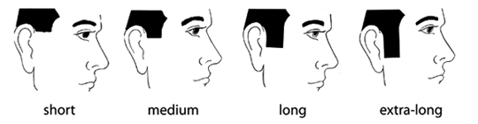
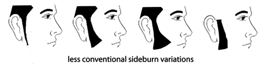
In general, shorter haircuts tend to feature shorter sideburns, and longer cuts feature longer sideburns, though there is always room for creativity if you want to go with a non-standard look. Longer sideburns can help balance a face with an unusually long chin (usually paired with a longer neck-edge in a hair cut), and shorter sideburns can balance a short or or weak chin (usually paired with a shorter neck-edge in a hair cut).
There are many possible variations with sideburns (you can even cut designs into them), but not many widely-recognized style names. Of course, there are always locally-known names for certain styles, or sideburns fashioned after certain celebrities or popular sports figures of the day, but few sideburn terms are as commonly known as the "mutton chop" and the lesser-known "friendly-mutton chop," both illustrated below.
Mutton chops
The most widely-known style name for sideburns is the mutton chop. Mutton chops are typically grown wide and long; some reach down as far as the chin line. They can be bushy or trimmed close to the face, but in general tend to be longer and wider than a traditional long sideburn.
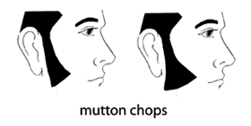
Friendly mutton chops
This is a variation of the mutton chop where the sideburns are grown across the face to meet with a mustache on both sides, creating a continuous line of facial hair. The chin is left clean shaven.
Mustache styles
A mustache refers to the growth of facial hair in the area above the upper lip. Mustaches can be worn alone, or integrated into beards. They can be trimmed thin or wide, worn long or short in hair length, and the ends of the mustache can be turned up, turned down, or cut straight across. They can be continuous across the lip, or "divided" (hair styled to either side of the center). Certain styles require styling wax and/or twisting of the hairs at the edges, but these tend to be less common in this historical moment.
When styling your mustache, keep in mind that small details in the shaping can make a difference in effect. If the corners of a mustache are turned slightly down, this can give a droopy effect, while if the corners are turned upward slightly, this can look either cheerful or a bit clownish, depending on the steepness of the curve. Straight lines are generally neutral and neat in appearance. Unless you are going for a very bushy style or are compensating for a bald head with a very heavy mustache, the hairs of the mustache should not project over the edge of the upper lip.
A mustache can be worn to balance certain facial types and features. Consider the size of the nose, the size and length of the mouth, the shape of the face, and the area above the upper lip when styling your mustache. A person with a very prominent nose might consider a medium to large-sized mustache. Someone with coarse facial features or a large area between the upper lip and nose might consider a heavy mustache. For someone with a long, narrow face, or with more refined features, a thin mustache can be becoming. A short, thin mustache is appropriate for someone with an extra-small mouth. For a wide mouth and/or prominent upper lip, a heavy handlebar or large divided mustache can work well. An extra large mouth might choose a pyramidal-shaped mustache. A rounded face looks good with a semi-square mustache, while a square face looks good with a linear mustache with slightly rounded edges curving down. On a very long face, a mustache can add balance. If you have a small or weak chin, you might not want to wear a mustache alone (without an accompanying beard or goatee), as it will make the chin seem even smaller.
Try some of the suggestions above when styling your mustache, and experiment to find what is most becoming for your facial features. When in doubt, ask your barber or hair stylist for advice on styling your mustache. A number of mustache styles are illustrated below, but they are only a handful of possible styles and variations.
If your facial hair is not yet very thick on your upper lip, you may wish to continue shaving it off until it has filled in enough to wear a decent mustache. A thin, wispy mustache tends to make you look like a teenage boy, so unless that is the look you are going for, keep shaving until the hair thickens and gains density.
Chevron
A thick and wide mustache, usually worn long to cover the top border of the upper lip.
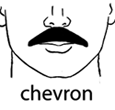
Dali
A narrow mustache with long points bent or curved steeply upward. Named for artist Salvador Dali.
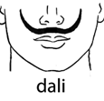
English
A narrow divided mustache that begins at the middle of the upper lip, with long whiskers pulled to either side of the center. The areas beyond the corners of the mouth are typically shaved.
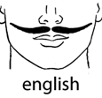
Fu manchu
A mustache that begins on the upper lip and whose whiskers are grown very long to extend down each side of the mouth to the to jaw. The areas just past the corners of the mouth are shaven, thus differentiating this style from the "horseshoe" (see below).
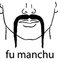
Handlebar
A handlebar mustache can be worn large or small ("petit handlebar"); it is characterized by the fact that it is bushy and must be worn long enough to curl the ends upward, which is usually achieved with styling wax.
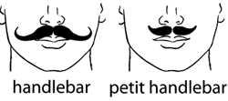
Horseshoe
A full moustache with vertical extensions grown on the corners of the lips and down the sides of the mouth to the jawline, resembling an upside-down horseshoe. The whiskers grown along the sides of the mouth in the horseshoe are sometimes referred to as "pipes." Not to be confused with the "fu manchu" which is grown long from the upper lip only-- the sides remain shaven in the fu manchu.
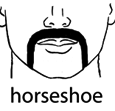
Imperial
A large mustache growing from both the upper lip and cheeks, whiskers from the cheeks are styled pointing upward.
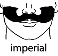
Lampshade
A mustache similar to the "painter's brush," but with corners angled slightly, resembling the shape of a lampshade.
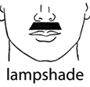
Mouthbrow
See "pencil."
Painter's brush
A thick mustache covering the width of the mouth, usually worn short, with slightly rounded corners.
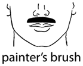
Pencil
A thin, narrow, closely clipped mustache that outlines the upper lip. Pencil style mustaches can be trimmed in different manners (see below). Also sometimes called a "mouthbrow."
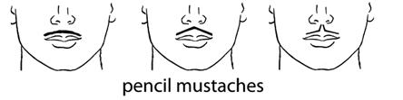
Pyramidal
A general name for mustaches shaped narrow on top and wide on the bottom, like a pyramid. Pyramidal mustaches can be shaped in a variety of ways, as shown below.
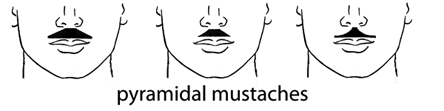
Toothbrush
A thick mustache, shaved to be about an inch wide in the center.
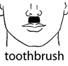
Walrus
A large, bushy, droopy mustache that hangs down over the lips, often entirely covering the mouth.
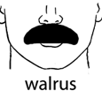
Beard styles
A beard refers to facial hair grown on the jawline, chin, cheeks, or neck area (and any combination of those areas). Beards can be worn with or without mustaches or sideburns. Like mustaches, they can be worn in a variety of styles, with long or closely clipped hair, and they can be shaped in many different ways around the mouth, nose, cheeks, and neck. Certain styles require styling products, but most do not and simply require periodic grooming and maintenance to maintain neatness.
Mustaches can be worn as an integrated part of the beard, or as a separate entity that is styled on its own. Likewise, sideburns can also be integrated or separate from a beard, depending on the style.
The style of beard that you choose should suit your facial features and your patterns of facial hair. For example, if you have trouble growing hair on your cheeks but not on your chin, a goatee style may work well for you. If you cannot grow a mustache but can grow hair along your jawline and chin, you might consider some variation of a jawline beard.
As for balancing facial features, beards can go a long way in helping masculinize a soft jawline or a weak chin. Those with triangular-shaped or diamond shaped faces (which tend to have narrow jaws and small chins) may benefit from a full beard, which adds weight to the jaw and chin. Those with square faces should style and trim their beards to slenderize to face, and those with round faces should also style their beards to make give the face a more narrow, oval appearance. A receding chin can be concealed by a full beard or a carefully clipped goatee or circle beard, and a protruding chin can be minimized by short beard and mustache cropped close to the face. A large nose, narrow lip, or high forehead can be offset by a mustache paired with a soul patch. Receding hairlines and bald heads can be balanced with a close clipped full beard, circle beard, or van dyck.
If you have a weak jawline, a dark-colored beard will add definition, but those with very light colored hair should be aware that lighter-colored beards can sometimes create shadows that result in a softer profile. Similarly, dark stubble can help mask a double chin or weak jaw, but light stubble can worsen the problem.
Finally, beards can offset a red or ruddy complexion, and can help cover blemishes or scars.
In addition to your facial features, it is wise to also consider your occupation and lifestyle when choosing a beard type. If you work in a job that does not allow beards because of health or safety reasons, or in an office that only allows conservative styles, you'll have to act accordingly. Also consider the amount of work you want to put into your beard-- if you are not a fan of frequent trimming and grooming, you may wish to pick a style that is relatively easy to maintain.
Listed below are only a few of many possible beard styles, and there are often numerous variations within the styles included here. Some will be better suited for certain facial types and personalities than others. When in doubt, ask your barber or stylist for advice on a beard style that will suit your face and lifestyle. Don't be afraid to experiment-- the beauty of facial hair is that it grows back fairly quickly, and you can always shave it off if it doesn't please you.
Anchor
A chin beard that is grown long into a point and styled with an accompanying mustache to resemble the shape of a ship's anchor.
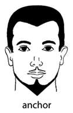
Balbo
A wide chin beard that covers the chin as well as a small area beyond it, accompanied by a separated mustache.
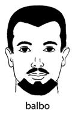
Brett
A beard that covers the chin and stretches back along the jawline ending at the ears. Not to be mistaken for a "chinstrap" which extends to include the sideburns.
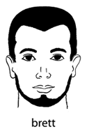
Chin curtain
A longer beard grown only along the lower portion of the face, covering the chin and following the jawline.
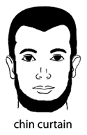
Chinstrap
A beard consisting of long sideburns that come forward along the jawline to meet under the chin, resembling the chin strap of a helmet. Also sometimes called a Donegal.
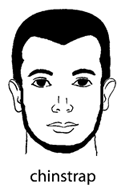
Circle Beard
Facial hair consisting of a chin beard and mustache connected by hair along the sides of one's mouth, thus forming a circle. Also called a "door knocker." Sometimes referred to as a "goatee," though technically the goatee refers only to hair growing on the chin area, not the mustache.
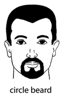
Door-knocker
See "circle beard."
Flavor saver
See "soul patch."
Full beard
A beard characterized by coverage on all areas of the face: upper lip, chin, sides, and sideburns. A full beard can have either a styled or integrated mustache, and can be clipped close or grown long. There are many possible variations of the full beard.
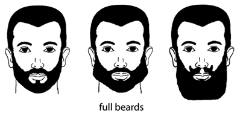
Garibaldi
A wide, full beard with a rounded bottom and integrated mustache.
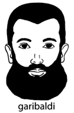
Goatee
A beard formed by hair grown only on the chin area.
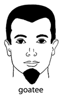
Hollywoodian
A beard with integrated mustache that is worn on the lower part of the chin and jaw area, without connecting sideburns.
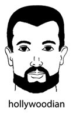
Jawline Beard
A beard that is grown from the chin along the jawline. Can refer to a "brett," a "chinstrap," or a "chin curtain," which are all variations of jawline beards.
Old Dutch
A large, long beard, connected by sideburns, that flares outward in width at the bottom, without a mustache.
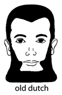
Royale
See "soul patch."
Shenandoah
See "spade."
Soul patch
A small tuft of hair under the lower lip. Also called a "royale" or a "flavor saver."
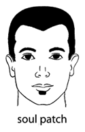
Spade
A large, long beard, connected by sideburns, without a mustache. Also called a "Shenandoah."
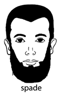
Stubble
Very short facial hair of only one or a few days growth. Can be worn all over the face as a result of not shaving, or can shaped and maintained by using a beard trimmer at a very low setting.
Van Dyck
A goatee accompanied by a mustache; usually the two are not connected.
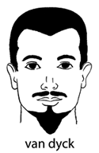
Verdi
A short, full beard with rounded bottom accompanied by a prominent mustache.
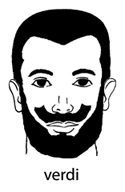
Growing facial hair
Once you've developed plenty of facial hair and decide you are ready to grow a decent mustache or beard, begin by growing your facial hair out for about four weeks without trimming any of it. (The exception to this is if you are only growing a mustache, in which case you can continue to shave your neck, sides, chin, and cheeks if you must-- but leave plenty of leeway around your mouth so you can properly trim and shape your mustache when the time comes.) If you work in a job where the scruffy look is frowned upon, you may wish to start growing your beard or mustache out while on vacation (or, if it is permissible, explain you are growing your beard and will trim it to a neater presentation in a few weeks). If you absolutely must trim before the end of the four weeks, shaving just the neck can give a neater look. Don't shave too close to the jawline, however, as you will want to shape that area once the beard has grown out.
When the four week growing period is over, you can begin to define your neckline, cheek line, and mustache or goatee lines with a razor or an electric beard trimmer on its lowest setting. A single blade razor will offer better control than a multi-blade, as will a straight razor if you know how to use one (see the shaving page for more details on shaving technique and razors). Do not over-trim at this stage! You can always cut a little more off, but you can't add it back on once you've clipped it.
Once you have defined the lines of your beard or mustache, then decide the length you would like and trim it accordingly (details on how to trim your facial hair are included in the next section). If you are aiming for a longer or fuller beard style, continue to let it grow while maintaining your previously-constructed outlines.
Another option after the four week growth period is to allow your barber to do the initial styling of your beard or mustache. If you choose this option, be sure to have a good conversation beforehand to ensure you get a style and result you are happy with. Once your barber has created the initial outlines and style of the beard, you can maintain the beard at home by keeping it neat and trimmed.
Trimming facial hair
Once you've grown and styled your beard or mustache the way you like it, you will then have to maintain it with periodic trimming. Depending on the length and style of the beard, this may be something you need to do every day (for very short beards) or every couple of weeks (for very long and undefined beards). Most beards and mustaches will need trimming every few days, or every week at the least.
You'll need the proper tools to maintain your facial hair. Depending on your preference and your style of facial hair, you'll need an electric beard trimmer or a scissors and comb (or both). Also necessary are a good mirror, proper lighting, and a razor to maintain the outlines of your style.
If you opt for the scissors and comb method of trimming, choose a pair of barber's scissors if possible-- they are sharp and designed to cut hair. You may also wish to purchase a fine-toothed mustache comb, as well as a wider-toothed comb for your beard. Look for combs that are designed for hair trimming or beard trimming, as they tend to be narrower than head-hair combs and easier to use over different parts of the face.
If you opt for an electric trimmer, be sure to purchase one that is specifically for beard and mustache trimming. Electric clippers that are used for haircuts tend to be too wide for effective use on the face. Depending on your preference, you may choose a cordless, corded, rechargeable, or battery-operated model. Look for a trimmer with numerous length-guide attachments, so you'll have several options.
While any maintenance shaving around your beard's outlines and neckline will require wetting the face and hair for shaving (see the shaving page for details on shaving technique), the actual trimming of your beard or mustache should be done while the hair is dry. This is because wet hair will tend to appear longer, and as such you risk trimming too much when your hair is wet. For this reason, you should trim your beard and mustache first and maintain your beard's outlines afterward, especially if you are using a wet razor to shave your neck or cheeks. (An exception to this rule is during the initial shaping of your beard and mustache from raw material, after your four week growth period. At that time you will probably want to define the shape of your beard first and then trim afterward, letting the hair dry before trimming if you used a wet razor for shaping.)
If you use the comb and scissors method for trimming, comb through your facial hair and cut the hair on the outside of the comb to the length you desire. Start slowly and practice carefully until you get the hang of it. It is better to trim conservatively at first; you can always trim off a little more, but you can't add it back once you've clipped it. To make sure you keep a good balance between the two sides of your face, maintain a systematic approach. Start from the chin working toward the ear on one side, then from the other ear back to the chin on the other side. Don't jump around from place to place. The same reasoning applies to the mustache: first comb the mustache down, then trim from the middle toward one side, and then from the other side back to the middle. Look straight ahead into the mirror whenever possible to maintain balance between the two sides of the face.
If you are using an electric trimmer, choose the length-guide that is most appropriate for the area of the beard or mustache you are trimming. As with scissors trimming, it is better to start conservatively until you know which attachment is best. Use a longer guide and work your way down to shorter guides until you find the proper length. As with scissors and comb trimming, make sure you keep a good balance between the two sides of your face and maintain a systematic approach. Start from the chin working toward the ear on one side, then from the other ear back to the chin on the other side. Don't jump around from place to place. The same reasoning applies to the mustache: first comb the mustache down, then trim from the middle toward one side, and then from the other side back to the middle. Look straight ahead into the mirror whenever possible to maintain balance between the two sides of the face.
Once you have trimmed your mustache and beard to your satisfaction, then you can maintain the outlines using your razor or trimmer set on its lowest setting.
If you have chosen an electric trimmer, don't forget to read your owner's manual and learn to properly maintain your clipper. Keep it clean and lubricate as directed to keep it in proper working order.
Keeping facial hair clean
Just like the hair on your head, your facial hair needs to be washed regularly. A mild shampoo is better to use on facial hair than bar soap, which will tend to dry your skin. Shampooing your beard is best done in the shower so that you can rinse it thoroughly. If your beard feels very coarse and dry after washing, try applying a conditioner after shampooing-- be sure to rinse well. There are special shampoos and conditioners designed for facial hair; some may find them helpful, but they are not strictly necessary. Comb your beard and mustache to remove tangles, and gently pat your beard dry with a towel when finished. If you wear a very long or thick beard, you may want to finish grooming with a brush.
Another issue to consider regarding facial hair cleanliness is keeping food out of your beard or mustache while eating and drinking. For those new to wearing facial hair, this is something to keep in mind until you have developed good habits. After finishing a meal, be sure to discreetly wipe or comb out any crumbs or items that have made their way into your facial hair. Certain styles may be more prone to collecting food than others, so use caution and good judgment-- especially when trying to impress someone on a date, in the office, or at a formal event.
Was this page helpful to you?
Please consider donating to ftmguide.org!
Trusty, L. Sherman, The Art and Science of Barbering, sixth edition, Wolfer Printing, 1965.
Shields-Michel, Lorin, et al., Hair Care and Styling for Men, Delmar, 2002.
All About Beards (aka "The Beard Guy")
www.beards.org
The Beard Community
beardcommunity.com
The Beard Board
www.beardboard.net
World Beard and Mustache Championships
www.worldbeardchampionships.com
The Handlebar Club
www.handlebarclub.co.uk/index.htm
Hairfinder: Men's Facial Hair Styles
www.hairfinder.com/hairstyling/mensfacialhair.htm
Beardsly Beard Care Products
www.beardshampoo.com
Ebarbershop (for mustache wax, grooming/trimming aids, shaving supplies, and other facial hair products)
ebarbershop.com
Was this page helpful to you?
Please consider donating to ftmguide.org!
Back to Hudson's FTM Resource Guide main page
Copyright, disclaimer, and privacy information